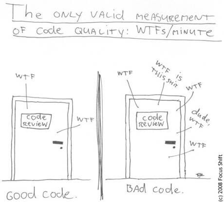

<!doctype html>
<html lang="en">
    <head>
        <meta charset="utf-8">
        <title>Your Code Won't Clean Itself!</title>
        <meta name="author" content="Shawn Sparks">
        <link rel="stylesheet" href="reveal.js-3.2.0/css/reveal.css">
		<link rel="stylesheet" href="reveal.js-3.2.0/css/theme/night.css" id="theme">
        <!-- Code syntax highlighting -->
		<link rel="stylesheet" href="reveal.js-3.2.0/lib/css/qtcreator_dark.css">
        <style>
            .reveal pre code {
                max-height: none;
            }
        </style>
    </head>
    <body>
        <div class="reveal">
            <div class="slides">
                <section data-markdown data-separator="\n\n\n">
                    <script type="text/template">
                        # Your Code Won't Clean Itself!


                        ## Who Am I?
                        Shawn Sparks<br/>
                        [@marshmellow1328](https://twitter.com/marshmellow1328)<br/>
                        https://github.com/marshmellow1328

                        https://marshmellow1328.github.io/clean-code/


                        ### My Formal Background
                        * UNI Graduate 2009
                            * Computer Science
                            * History
                        * Principal Financial Group
                            * Java Developer
                            * Architect


                        ### My Fun Background
                        * LAMP Past
                        * Docker + MEAN Stack
                        * Hackathons


                        ## What's Clean Code?
                        


                        ## What's Clean Code?
                        * Easy to Understand<!-- .element: class="fragment" data-fragment-index="1" -->
                        * Easy to Maintain<!-- .element: class="fragment" data-fragment-index="2" -->
                        * Testable<!-- .element: class="fragment" data-fragment-index="3" -->


                        ## Why Do We Care?
                        * 50-75% Life of Software is Maintenance [<sup>[1]</sup>](http://stackoverflow.com/questions/3477706/development-cost-versus-maintenance-cost)[<sup>[2]</sup>](http://programmers.stackexchange.com/questions/47991/where-is-this-from-originally-80-of-the-lifetime-cost-of-a-piece-of-softwa)
                        * Cost of Rewrites
                        * More time reading than writing (10:1 according to Uncle Bob)


                        ## Clean Code
                        More like guidelines than rules


                        ### Guiding Questions
                        * Is this adding value?
                        * Will I understand this in 6 months?
                        * Can someone else understand this? (Ask someone else!)


                        ### Names
                        * Meaningful
                        * Pronounceable
                        * Enough to be Clear
                        * Nothing More
                        * Magic Literals


                        #### Meaningful Names
                        <pre><code class="JavaScript">
                            // bad
                            let arr = [];

                            // good
                            let attendees = [];
                        </code></pre>


                        #### Pronounceable Names
                        <pre><code class="JavaScript">
                            // bad
                            let prrCdTlk = this;

                            // good
                            let prairieCodeTalk = this;
                        </code></pre>


                        #### Concise Names
                        <pre><code class="JavaScript">
                            // bad
                            new GameProcessorComputationEngine();

                            // good
                            new GameEngine();
                        </code></pre>


                        #### Don't Get Fluffy
                        


                        #### Magic Literals
                        <pre><code class="JavaScript">
                            // magic literal
                            if( capacity === 100 ) {}

                            // good
                            let MAX_CAPACITY = 100;
                            if( capacity === MAX_CAPACITY ) {}
                        </code></pre>


                        ### Comments


                        #### Example 1
                        <pre><code class="JavaScript">
                            // add attendee
                            talk.addAttendee( 'Shawn' );
                        </code></pre>


                        #### Example 2
                        <pre><code class="JavaScript">
                            // add domains
                            template.add( 'google', 'https://www.google.com' );
                            template.add( 'yahoo', 'https://www.yahoo.com' );
                            template.add( 'phone', '555-5555' );
                        </code></pre>


                        #### Comments Gone Wrong
                        * Redundant
                        * Misleading or Out of Date
                        * Adding value?
                        * Do you really understand the problem?


                        #### Alternatives
                        * Better names
                        * Helper functions


                        ### Functions


                        #### Example 1
                        <pre><code class="JavaScript">
                            function takeLunchHour() {
                                prepareLunch();
                                eatLunch();
                            }

                            function prepareLunch() {
                                var bread = cabinets.getItem( 'bread' );
                                var meat = frig.getItem( 'turkey' );
                                var cheese = frig.getItem( 'cheese');
                                var condiment = frig.getItem( 'honey mustard' );
                                var sandwich = bread + meat + cheese + condiment;

                                var plate = cabinets.getItem( 'plate' );
                                plate.hold( sandwich );

                                var pan = sink.getItem( 'pan' );
                                wash( pan );
                                cabinets.addItem( pan );

                                var glass = cabinets.getItem( 'glass' );
                                glass.fill( sink.getWater() );
                            }
                        </code></pre>


                        #### Example 1 - Alternative
                        <pre><code class="JavaScript">
                            function takeLunchHour() {
                                clearSink();
                                prepareLunch();
                                eatLunch();
                            }

                            function clearSink() {
                                var pan = sink.getItem( 'pan' );
                                wash( pan );
                                cabinets.addItem( pan );
                            }

                            function prepareLunch() {
                                var sandwich = makeSandwich();
                                var plate = cabinets.getItem( 'plate' );
                                plate.hold( sandwich );

                                var glass = cabinets.getItem( 'glass' );
                                glass.fill( sink.getWater() );
                            }

                            function makeSandwich() {
                                var bread = cabinets.getItem( 'bread' );
                                var meat = frig.getItem( 'turkey' );
                                var cheese = frig.getItem( 'cheese');
                                var condiment = frig.getItem( 'honey mustard' );
                                var sandwich = bread + meat + cheese + condiment;
                                return sandwich;
                            }
                        </code></pre>


                        #### Example 2
                        <pre><code class="JavaScript">
                            function getOutput( phone, apiKey ) {
                                var errors = validateInputs( phone, apiKey );
                                if( errors ) {
                                    return new ErrorResponse();
                                }

                                trackUsage( apiKey );

                                return addVariablesToTemplate( phone );
                            }

                            function addVariablesToTemplate( phone ) {
                                var variables = new Map();
                                variables.add( 'google', 'https://www.google.com' );
                                variables.add( 'phone', phone );

                                try {
                                    var output = template.render( variables );
                                    return new SuccessResponse( output );
                                }
                                catch( error ) {
                                    return new ErrorResponse();
                                }
                            }
                        </code></pre>


                        #### Example 2 - Alternative
                        <pre><code class="JavaScript">
                            function getOutput( phone, apiKey ) {
                                var errors = validateInputs( phone, apiKey );
                                if( errors ) {
                                    return new ErrorResponse();
                                }

                                trackUsage( apiKey );

                                try {
                                    var output = processTemplate( phone );
                                    return new SuccessResponse( output );
                                }
                                catch( error ) {
                                    return new ErrorResponse( error );
                                }
                            }

                            function processTemplate( phone ) {
                                var variables = new Map();
                                variables.add( 'google', 'https://www.google.com' );
                                variables.add( 'phone', phone );

                                return template.render( variables );
                            }
                        </code></pre>


                        #### Function Length
                        * < 10 LOC
                        * [Function Decomposition](https://en.wikipedia.org/wiki/Decomposition_(computer_science&#41;)
                        * Helper Methods


                        #### Number of Parameters
                        * < 4
                        * [Builder Pattern](https://en.wikipedia.org/wiki/Builder_pattern)
                        * [Command Pattern](https://en.wikipedia.org/wiki/Command_pattern)


                        #### Do One Thing!
                        * [Single Responsibility Principle](https://en.wikipedia.org/wiki/Single_responsibility_principle)


                        #### DRY
                        * [Don't Repeat Yourself](https://en.wikipedia.org/wiki/Don%27t_repeat_yourself)


                        ### Conditionals
                        * Needed? [Example](examples/conditionals-unnecessary.js)
                        * Move complex rules to named methods [Example](examples/conditionals-helper.js)


                        ## How to Keep Code Clean?


                        ### Boyscout Rule
                        "Leave the code cleaner than you found it"


                        ### Code Review
                        * Ask someone what they think
                        * Pull requests


                        ### Automated Tools
                        * Java
                            * Checkstyle
                            * PMD
                            * FindBugs
                        * JavaScript
                            * jshint
                            * jscs
                        * Sonar


                        ## Summary
                        * Names Matter
                        * Functions should be short
                        * Functions should do one thing
                        * Boyscout Rule


                        ## References
                        <br>
                        [Clean Code by Robert C. Martin](http://www.amazon.com/Clean-Code-Handbook-Software-Craftsmanship/dp/0132350882)


                        ## Additional Good Sources
                        * Martin Fowler
                            * [martinfowler.com](http://martinfowler.com)
                            * [@martinfowler](https://twitter.com/martinfowler)
                        * Uncle Bob (Robert C. Martin) - [@unclebobmartin](https://twitter.com/unclebobmartin)
                        * Kent Beck - [@KentBeck](https://twitter.com/KentBeck)
                        * [Design Patterns](http://www.amazon.com/Design-Patterns-Elements-Reusable-Object-Oriented/dp/0201633612) "Gang of Four Book"


                        ## Questions?
                    </script>
                </section>
            </div>
        </div>

        <script src="reveal.js-3.2.0/lib/js/head.min.js"></script>
        <script src="reveal.js-3.2.0/js/reveal.js"></script>
        <script type="text/javascript">
            Reveal.initialize(
                {
                    history: true,
                    dependencies: [
                        { src: 'reveal.js-3.2.0/plugin/markdown/marked.js' },
                        { src: 'reveal.js-3.2.0/plugin/markdown/markdown.js' },
                        {
                            src: 'reveal.js-3.2.0/plugin/highlight/highlight.js',
                            async: true,
                            callback: function() { hljs.initHighlightingOnLoad(); }
                        }
                    ]
                }
            );
        </script>
    </body>
</html>
